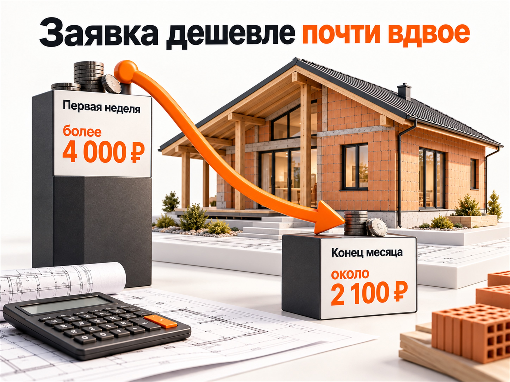

Яндекс Директ
Яндекс Директ для строительства домов: как настроить рекламу и получать заявки
Чтобы получать заявки на строительство частных домов через Яндекс Директ, нужно разделить рекламу по технологиям строительства, собрать коммерческие запросы, подготовить подходящие посадочные страницы и настроить отслеживание обращений. После запуска важно оценивать не только стоимость заявки, но и количество потенциальных заказчиков, которые доходят до расчёта сметы и заключения договора.
Для строительства домов особенно важна вся рекламная воронка. Человек может заинтересоваться проектом сегодня, сравнивать подрядчиков несколько недель и только потом принять решение.
В моём кейсе по строительству домов из керамического блока Porotherm стоимость заявки в первую неделю превышала 4 000 ₽. К концу первого месяца удалось снизить её примерно до 2 100 ₽. Этот результат показывает, почему рекламу нельзя оценивать только по первым дням работы.
Как настроить Яндекс Директ для строительства домов в 2026 году
Настройку рекламы частного домостроения я бы разделил на семь этапов.
- Определить направления строительства. Разобраться, какие дома компания строит, в каких регионах работает, какие комплектации предлагает и какие заказы наиболее выгодны.
- Подготовить посадочные страницы. Человек, который ищет строительство газобетонного дома, должен попадать на страницу с проектами и условиями строительства именно таких домов.
- Собрать коммерческие запросы. Начать со спроса на строительство под ключ, конкретные технологии, проекты и расчёт стоимости.
- Настроить кампании. Для детального управления использовать Единую перфоманс-кампанию, определить места показа, географию, группы объявлений, таргетинги и стратегию.
- Подключить аналитику. Отслеживать формы, звонки, заявки из квизов и другие реальные обращения.
- Запустить и проверить рекламу. Изучить поисковые запросы, категории автотаргетинга, объявления, аудитории и фактическую стоимость заявок.
- Связать рекламу с продажами. Отдельно учитывать квалифицированные обращения, расчёты смет, встречи и договоры.
В 2026 году большая часть управления ставками автоматизирована. Поэтому задача специалиста не сводится к подбору ключевых фраз. Важно правильно определить аудиторию, дать алгоритму полезные сигналы и контролировать качество получаемого трафика.
Подробнее общая механика описана в моей статье «Как настроить Яндекс Директ».
Как разделить рекламу по технологиям строительства
Каркасные, газобетонные, кирпичные и другие дома могут различаться по стоимости, срокам, комплектациям и целевой аудитории. Эти различия нужно учитывать в структуре рекламных кампаний.
Например, если компания строит каркасные дома и дома из газобетона, для двух направлений могут потребоваться разные объявления и страницы.
| Направление | Пример запроса | Посадочная страница |
|---|---|---|
| Каркасные дома | каркасный дом под ключ | Проекты каркасных домов |
| Газобетон | строительство дома из газобетона | Дома из газобетона |
| Кирпичные дома | строительство кирпичного дома | Проекты кирпичных домов |
| Дома под ключ | построить дом под ключ | Строительство под ключ |
| Индивидуальные проекты | строительство дома по своему проекту | Индивидуальное строительство |
Главный принцип простой: запрос пользователя, рекламное объявление и содержание страницы должны соответствовать друг другу.
Если человек ищет строительство дома из газобетона, не стоит показывать ему универсальное предложение с каркасными домами, банями и ремонтом квартир.
При этом создавать десятки отдельных кампаний ради каждого запроса не нужно. Разделение оправдано, когда меняются предложение, посадочная страница, экономика направления или условия показа.
Какие поисковые запросы использовать
Начинать лучше с прямого коммерческого спроса:
- строительство дома под ключ;
- заказать строительство частного дома;
- дом из газобетона под ключ;
- строительство каркасного дома;
- построить дом на участке;
- проекты домов с ценами;
- стоимость строительства дома 100 м²;
- строительная компания в нужном регионе.
Отдельного внимания заслуживают запросы со словами «цена», «стоимость» и «проект».
Они могут приводить как потенциальных покупателей, так и людей, которые пока только изучают рынок. Поэтому их качество нужно оценивать по реальным обращениям.
Нецелевые запросы со словами «своими руками», «бесплатно», «чертёж», «вакансии», «работа» и похожими формулировками необходимо контролировать. Но не стоит автоматически исключать все информационные слова: некоторые запросы могут быть частью пути реального заказчика.
После запуска список минус-фраз уточняется по отчёту поисковых запросов, а не только по предварительным предположениям.
Поиск или РСЯ для строительства домов
Поиск Яндекса позволяет работать с людьми, которые уже ищут подрядчика. РСЯ помогает расширять аудиторию и возвращать потенциальных заказчиков во время длительного выбора строительной компании.
| Критерий | Поиск | РСЯ |
|---|---|---|
| Спрос | Пользователь сам ищет строительство | Пользователь может пока не искать подрядчика |
| Основная задача | Получить обращение по сформированному спросу | Расширить охват и обеспечить повторные контакты |
| Объявления | Коммерческие предложения под запросы | Визуальные креативы с проектами домов |
| Основной риск | Высокая конкуренция за целевые запросы | Нецелевые обращения и слабая квалификация |
| Оценка | Стоимость и качество обращений | Стоимость и качество обращений |
На старте я бы проверял оба направления, но распределение бюджета определял по доступному спросу и возможностям компании.
Поисковая реклама
На Поиске важно учитывать не только подобранные ключевые фразы, но и фактические запросы пользователей, включая трафик от автотаргетинга.
Например, рекламодатель может продвигать строительство домов под ключ, а часть переходов получать от людей, которые ищут готовые дома с участками. Для строительной компании, которая не продаёт готовую недвижимость, такой трафик может оказаться нецелевым.
Реклама в РСЯ
В РСЯ я бы тестировал реальные фотографии построенных домов, отдельные проекты и предложения, привязанные к конкретной технологии строительства.
Для ретаргетинга можно отдельно использовать аудиторию людей, которые уже посещали страницы проектов или изучали условия строительства.
При этом не стоит заранее считать РСЯ более дешёвым или более эффективным каналом. Решение нужно принимать по фактическим результатам.
Какой сайт нужен для получения заявок на строительство домов
Посадочная страница должна помогать посетителю оценить предложение строительной компании и запросить расчёт конкретного проекта.
Для этой ниши особенно важны следующие элементы:
- Проекты домов. Площадь, этажность, планировки, технология строительства и фотографии.
- Стоимость. Подтверждённые цены или понятный способ предварительного расчёта.
- Комплектации. Что входит в строительство, какие работы и материалы оплачиваются отдельно.
- Построенные объекты. Реальные фотографии, характеристики объектов и выполненные работы.
- Условия строительства. География, этапы, сроки, порядок оплаты и подтверждённые гарантии.
- Заявка. Возможность запросить расчёт стоимости выбранного дома.
Например, человек рассматривает строительство дома из газобетона площадью 120 м². Ему полезнее увидеть подходящие проекты, планировки и состав комплектации, чем общую надпись «Строим дома качественно и надёжно».
Цены и сроки нельзя указывать просто ради привлекательного рекламного предложения. Они должны соответствовать действительным условиям строительной компании.
Нужен ли квиз
Квиз может облегчать сбор первичной информации о потенциальном заказчике.
Для строительства домов достаточно выяснить предполагаемую площадь, технологию строительства, наличие участка, бюджет и ориентировочные сроки начала работ.
Однако завершение первого шага квиза нельзя считать полноценной заявкой. Важнее, получил ли отдел продаж контакт человека, с которым можно обсуждать реальный заказ.
Если компания рекламирует несколько разных технологий строительства, отдельная посадочная страница под каждое важное направление обычно полезнее универсального предложения на главной.
Как оценивать качество заявок из Яндекс Директа
Для строительства домов нужно разделять первичные обращения, квалифицированные лиды и заключённые договоры.
Первичная заявка означает, что человек оставил контакт или позвонил. Она ещё не подтверждает, что клиент готов заказать строительство.
Квалифицированный лид - это обращение, которое соответствует согласованным критериям строительной компании.
Например, менеджер может выяснить:
- подходит ли регион строительства;
- какую технологию рассматривает клиент;
- есть ли земельный участок или план его приобретения;
- соответствует ли бюджет предложениям компании;
- когда планируется начало строительства.
Отсутствие участка не всегда означает нецелевую заявку. Если компания помогает с его подбором или работает с клиентами на раннем этапе, такое обращение тоже может быть перспективным.
После квалификации потенциальный заказчик может получить расчёт сметы, договориться о встрече и заключить договор.
Именно поэтому я не рекомендую оценивать рекламу только по количеству отправленных форм.
Как настроить аналитику
Минимально необходимо отслеживать отправленные формы, звонки, завершённые заявки из квиза и другие реальные способы обращения.
Следующий этап - связать данные рекламы с CRM. Для этого можно использовать загрузку офлайн-конверсий или передачу данных о клиентах и заказах.
Яндекс Метрика позволяет связывать такие события с рекламными визитами при корректной передаче идентификаторов. Привязанные конверсии могут использоваться в анализе и оптимизации рекламы.
Например, если одна кампания получила 30 заявок, а вторая 15, по одному CPL первая может выглядеть лучше. Но если из первой кампании поступило два квалифицированных обращения, а из второй восемь, оценка эффективности изменится.
Подробнее этот подход разобран в статье «Офлайн-конверсии в Яндекс Директе».
Какую стратегию Яндекс Директа выбрать
Стратегию необходимо выбирать с учётом количества доступных конверсий, бюджета и задач бизнеса.
Для Единой перфоманс-кампании доступны автоматические стратегии, в том числе «Максимум конверсий» и «Максимум кликов».
Если кампания получает достаточно реальных заявок, можно оптимизировать показы под эти действия. Но при небольшом количестве обращений алгоритму сложнее находить подходящую аудиторию.
При запуске нового проекта я бы не задавал слишком низкую целевую стоимость заявки без данных о фактической цене привлечения.
Например, если реальные обращения обходятся примерно в 5 000 ₽, установка ограничения в 1 000 ₽ сама по себе не сделает рекламу в пять раз эффективнее. Наоборот, слишком жёсткое ограничение может сократить объём показов и заявок.
В строительстве домов особенно важно не дробить небольшую статистику между множеством кампаний и редких целей.
Сколько стоит заявка на строительство дома в Яндекс Директе
Единой рыночной стоимости заявки на строительство частного дома нет. Она зависит от региона, технологии строительства, конкуренции, сезона, посадочной страницы и качества рекламного трафика.
Поэтому я не рекомендую ориентироваться только на средний CPL из чужих кейсов.
Для примера можно посмотреть опубликованные показатели другого проекта в сфере ИЖС в Ставропольском крае.
В кейсе Михаила Попыванова за апрель 2026 года были приведены следующие результаты:
| Показатель | Результат |
|---|---|
| Рекламные расходы без НДС | 153 563 ₽ |
| Первичные заявки | 53 |
| Стоимость первичной заявки | 2 897 ₽ |
| Доля квалифицированных заявок | 42% |
| Стоимость квалифицированного лида | 6 899 ₽ |
Это результат одного конкретного проекта, а не среднерыночная стоимость лида в 2026 году.
Обратите внимание на различие: первичная заявка стоила около 2 900 ₽, а квалифицированная почти 6 900 ₽.
Для строительной компании второй показатель часто значительно полезнее первого. Но окончательно оценивать рентабельность нужно по стоимости привлечения договора и экономике строительства.
Как рассчитать рекламный бюджет на строительство домов
Бюджет на Яндекс Директ нужно рассчитывать от предполагаемой стоимости трафика, конверсии сайта и необходимого количества заявок.
Основные формулы:
Количество кликов = рекламный бюджет / средняя стоимость клика.
Количество заявок = клики × конверсия сайта.
CPL = рекламный бюджет / количество заявок.
Для квалифицированных обращений и договоров расходы рассчитываются аналогично, но в знаменателе используется количество соответствующих результатов.
Пример расчёта бюджета
Предположим, строительная компания планирует потратить на тест Яндекс Директа 150 000 ₽.
Для примера возьмём условную стоимость клика 150 ₽ и конверсию посадочной страницы 3%.
| Показатель | Расчёт |
|---|---|
| Рекламный бюджет | 150 000 ₽ |
| Средняя стоимость клика | 150 ₽ |
| Количество кликов | 1 000 |
| Конверсия сайта | 3% |
| Первичные заявки | 30 |
| Стоимость заявки | 5 000 ₽ |
| Квалификация заявок | 40% |
| Квалифицированные лиды | 12 |
| Стоимость квалифицированного лида | 12 500 ₽ |
В этом примере стоимость квалифицированного обращения оказывается в 2,5 раза выше стоимости обычной заявки.
Если из 12 квалифицированных лидов компания заключит два договора, стоимость привлечения одного договора по рекламным расходам составит 75 000 ₽.
Если заключит только один договор, стоимость привлечения увеличится до 150 000 ₽.
Это учебная расчётная модель, а не прогноз реальной кампании и не средние показатели строительной отрасли. Фактические результаты могут значительно отличаться.
Отдельно нужно учитывать услуги специалиста, налоги и другие расходы, которые не включены в приведённый рекламный бюджет.
Как определить допустимую стоимость заявки
Допустимую стоимость привлечения нужно считать от экономики строительной компании.
Например, если компания готова тратить на получение одного договора не более 100 000 ₽, а договор заключается по 5% первичных заявок, допустимый CPL составит:
100 000 ₽ × 5% = 5 000 ₽.
При такой экономике первичная заявка по 5 000 ₽ соответствует установленному пределу только при сохранении предполагаемой конверсии в договор.
Если фактическая конверсия окажется ниже, реклама может выйти за допустимую стоимость привлечения клиента.
При планировании рекламного бюджета важно также учитывать объём доступного спроса. Нельзя рассчитывать на определённое количество заявок только потому, что компания готова выделить соответствующую сумму.
Для предварительных расчётов можно использовать прогноз бюджета Яндекс Директа.
Реальный кейс: Яндекс Директ для строительства домов из Porotherm
В моей практике был проект по продвижению строительства частных домов из керамического блока Porotherm.

Для привлечения потенциальных заказчиков использовались рекламные кампании на Поиске Яндекса и в РСЯ.
Реклама работала параллельно с кампаниями самого заказчика. Основная часть обращений поступала из настроенных мной кампаний.
В первую неделю после запуска стоимость заявки превышала 4 000 ₽.
К концу первого месяца работы удалось снизить её примерно до 2 100 ₽, то есть почти в два раза.
Этот кейс показывает, насколько важно оценивать рекламную кампанию в динамике. Первые дни не всегда отражают её дальнейшую эффективность.
При этом снижение стоимости первичной заявки само по себе не доказывает рост продаж. Для полноценной оценки необходимо учитывать квалификацию обращений и заключённые договоры.
Подробности проекта находятся в моём кейсе по Яндекс Директу для строительства домов.
Что проверять после запуска рекламы
После появления статистики я бы сосредоточился на трёх направлениях.
Первое - качество трафика. Нужно изучить поисковые запросы, автотаргетинг, фактическую географию, аудитории и объявления. Особенно важно отделять запросы на строительство от поиска готовой недвижимости, ремонта и самостоятельного строительства.
Второе - работа посадочной страницы. Если трафик соответствует предложению, но заявок мало, стоит проверить проекты, цены, комплектации, форму обращения и работу сайта на мобильных устройствах.
Третье - качество заявок. Если формы поступают, но менеджеры не могут перевести клиентов к расчёту сметы, необходимо разбираться в причинах. Проблема может быть в аудитории, условиях предложения или обработке обращений.
Не стоит постоянно менять цели, стратегию и бюджет только из-за нескольких неудачных дней. Нужно накопить достаточные данные, определить причину и проверять изменения последовательно.
Основные ошибки при настройке Директа для строительства домов
Все направления рекламируются одинаково
Каркасное строительство и дома из керамического блока могут требовать разных предложений. Универсальное объявление не всегда закрывает потребности обеих аудиторий.
Не указаны комплектации и условия
Человек видит привлекательную стоимость строительства, но не понимает, включены ли фундамент, инженерные сети, отделка и другие работы.
Это может приводить к обращениям от клиентов, которые рассчитывают на другую цену.
Рекламу оптимизируют по лёгким целям
Просмотр страницы, клик по кнопке или начало квиза нельзя автоматически приравнивать к полноценной заявке на строительство.
Не учитываются звонки и обращения вне формы
Часть потенциальных клиентов предпочитает общаться с менеджером напрямую. Если эти обращения не учитываются, статистика рекламы будет неполной.
Оценивают только CPL
Дешёвые обращения не всегда превращаются в договоры. Стоимость квалифицированного лида и привлечения клиента может оказаться гораздо важнее.
Не учитывают длительный цикл сделки
Потенциальный заказчик может вернуться к строительству через несколько месяцев. Поэтому оценивать рекламные результаты исключительно по договорам, заключённым в неделю первого обращения, неправильно.
Вывод
Настройка Яндекс Директа для строительства домов начинается с понимания спроса, технологий строительства и экономики компании. Затем подбираются рекламные кампании, готовятся посадочные страницы и настраивается аналитика.
Поиск помогает получать обращения по сформированному спросу, РСЯ расширяет аудиторию и обеспечивает повторные контакты. Но эффективность обоих каналов нужно оценивать по качеству реальных обращений.
В собственном проекте по строительству домов из Porotherm мне удалось снизить стоимость заявки примерно в два раза за первый месяц. Однако для строительного бизнеса важна не только цена заявки, но и стоимость квалифицированного обращения и заключённого договора.
Я занимаюсь настройкой и ведением Яндекс Директа более 10 лет. Работаю напрямую как ИП, анализирую рекламные кампании, посадочные страницы и качество заявок. Стоимость ведения рекламы - от 30 000 ₽ в месяц, рекламный бюджет оплачивается отдельно.
Подробнее об услугах и реализованных проектах можно узнать на [naklikay.ru](https://naklikay.ru/).